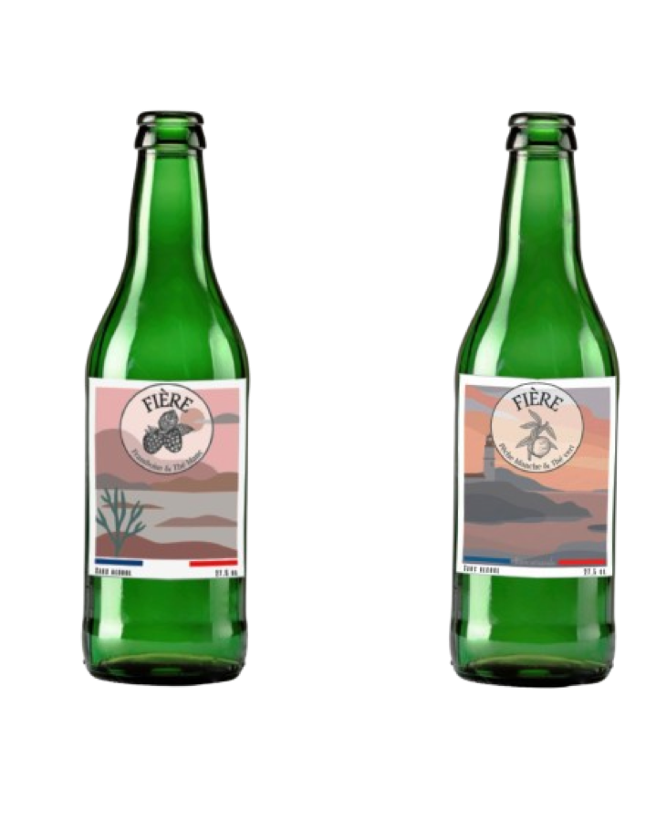
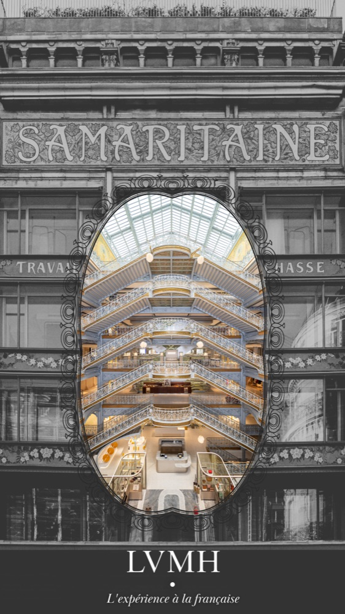

Sept. 2025 – Août 2026
Léa Nature — Périgny
Alternante
Conception et mise à jour de supports de formation pour les équipes internes (marque Eau Thermale Jonzac).
Voir le projet →Portfolio — 2026
Chargée marketing digital · Réseaux sociaux, CMS & emailing

Jeune diplômée d'un Master Marketing Digital à l'IAE La Rochelle, opérationnelle sur toute la chaîne digitale : gestion des réseaux sociaux, CMS, emailing et suivi des KPI.
Autonome et organisée, je suis motivée à l'idée de mettre mes compétences au service d'une nouvelle opportunité dans le marketing digital.
Master Marketing Digital
IAE La Rochelle
BUT Techniques de Commercialisation
IUT de Troyes — Marketing digital, E-business & Entrepreneuriat
Alternante
Conception et mise à jour de supports de formation pour les équipes internes (marque Eau Thermale Jonzac).
Voir le projet →Stagiaire
Création de contenus digitaux, animation de la page LinkedIn, montage vidéo, refonte de la plaquette commerciale et création d'un nouveau logo.
Voir le projet →Stagiaire
Collecte de données, développement et gestion d'un nouveau projet dédié à la seconde main.
Stagiaire
Gestion stratégique des réseaux sociaux, création et planification de contenus, analyse des performances, veille concurrentielle et prospection.
Voir le projet →
Création d'un nouveau logo pour ATS (Ascenseurs sur mesure) et déclinaison sur l'ensemble des supports : cartes de visite, réseaux sociaux, page LinkedIn de l'entreprise.

Conception d'un support de formation interne pour présenter la gamme Sublimactive (actifs, résultats cliniques, argumentaire produit) aux équipes.

Création d'un site vitrine et e-commerce sous WordPress pour une marque de bijoux fictive : page d'accueil, fiches produits et parcours d'achat.

Création de l'identité et du packaging d'une marque de bière sans alcool : nom, étiquettes illustrées et déclinaisons de goût.

Conception d'une affiche mettant en scène le patrimoine architectural de la Samaritaine pour illustrer l'expérience client LVMH.

Création d'un flyer et de contenus pour présenter le dispositif d'accessibilité prioritaire Handivisible / BabyVisible, en complément de la gestion des réseaux sociaux.

Recréation d'une double page de magazine sous Adobe InDesign, à des fins d'entraînement à la mise en page éditoriale (typographie, grille, hiérarchie visuelle).


Disponible pour un CDI ou un CDD en marketing digital.
N'hésitez pas à me contacter.